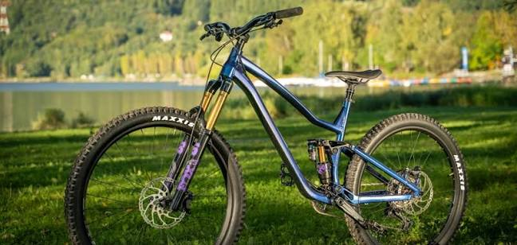

Informacion a tener en cuenta
Recorre la ciudad de manera cómoda y sostenible. El alquiler incluye casco y candado para que puedas disfrutar de tu recorrido con mayor tranquilidad. Es una opción ideal para paseos cortos.
En Rueda Libre ofrecemos alquiler de bicicletas para que disfrutes de la ciudad y la naturaleza. Conoce nuestras opciones y visítanos para comenzar tu próxima aventura

Recorre la ciudad de manera cómoda y sostenible. El alquiler incluye casco y candado para que puedas disfrutar de tu recorrido con mayor tranquilidad. Es una opción ideal para paseos cortos.
Explora senderos y caminos naturales con bicicletas diseñadas para terrenos irregulares. Consulta la disponibilidad y las condiciones del alquiler. Es una alternativa perfecta para los amantes de la aventura.
Descubre nuevos lugares acompañado por personas que conocen los recorridos. Podrás disfrutar de paisajes naturales y conocer sitios interesantes de la zona. Una experiencia para compartir y recordar.


Ven a conocernos y descubre nuestras bicicletas. Estaremos encantados de ayudarte a elegir tu próximo recorrido.
Consulta nuestra ubicación en el mapa
Escríbenos: hola@ruedalibre.example